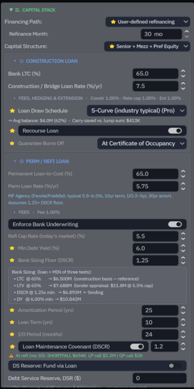
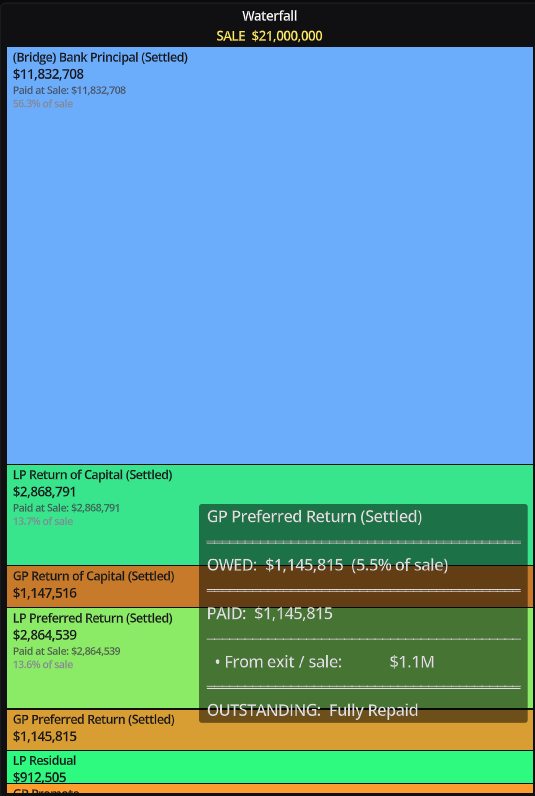
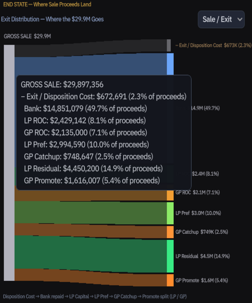
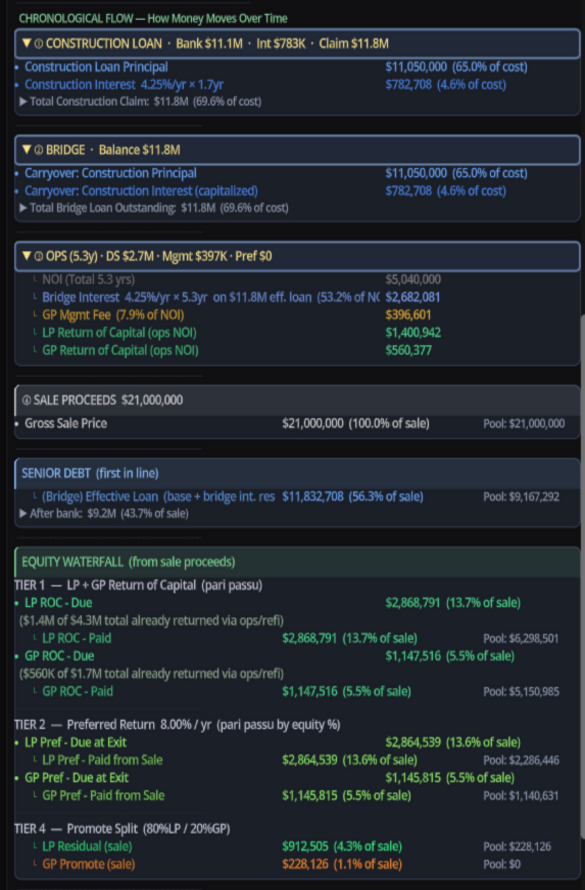
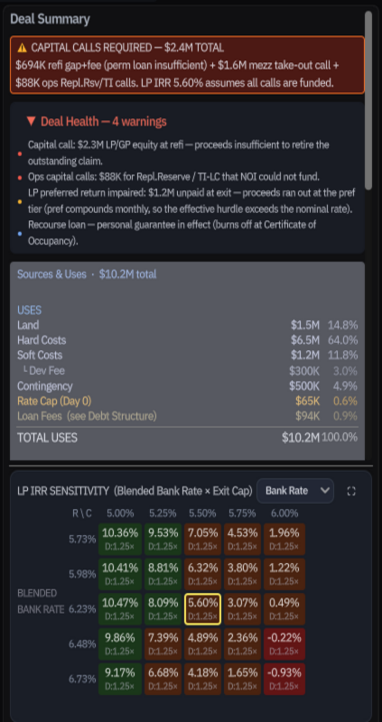

Institutional Waterfall Modeling. Without the Spreadsheet Hell. Underwrite Institutional Deals in minutes, Not Hours.
CRE Dev Sim is a real-time underwriting tool built for developers, GPs, and analysts who need to model complex LP/GP capital structures — and see exactly how the deal breaks before it does.
The Problem It Solves
Every serious CRE deal eventually lands in a recursive Excel waterfall — a fragile, auditor-unfriendly nest of cross-referenced cells where one bad input cascades silently into a wrong IRR, a wrong promote, a wrong capital call.
CREDevSim does not replace your spreadsheet. It replaces the part of your spreadsheet that was always wrong.
The waterfall engine, the debt mechanics, the capital call triggers, the preferred return compounding — all computed in a single logic-locked engine, recalculated in real time as you adjust your deal.
The Visual Advantage
Designed to institutional underwriting standards for commercial real estate development CRE Dev Sim gives you a real-time, high-fidelity visual dashboard. See exactly how your deal structure shifts as you toggle debt, equity, and lease-up timelines. It is not just a calculator—it is a sandbox where you can see the deal break before it actually does, in real time.
The One-Engine Promise
Whether you are tackling Ground-Up Development, Major Renovation, Distressed Value-Add, or Stabilized Acquisitions, CRE Dev Sim adapts instantly, applying the correct institutional logic for every deal structure.
Why Professionals Choose Us
CRE Dev Sim aren't just a calculator; It is an interactive risk-intelligence platform. Build, stress-test, and refine complex real estate deals in seconds, not hours."
One Engine, Every Asset Class
Designed for total versatility. Works across all asset classes: Multifamily, Industrial, Retail, Office, Hotel, Mixed-Use, or Self-Storage, model any deal with a stabilized NOI and capital structure. Whether you're modeling a Ground-Up Development, Major Renovation, Distressed Value-Add, or Stabilized Acquisition, the engine adapts to your deal type instantly.
Built for Your Reality
Perfect for you if you're a General Partner looking to quickly stress-test sponsor promotes, an Institutional Analyst auditing complex real estate deals, or a Real Estate Entrepreneur needing to present institutional-grade pitch decks to capital partners.
Institutional-Grade Modeling Architecture
Our Commercial Real Estate Underwriting and Development Tool handles the heavy lifting of sophisticated deal-making, all natively integrated into one interactive workflow:
The Underwriting Engine
Automate institutional-grade capital stacks, waterfall distributions, and returns modeling with a robust, generating clear, report-ready metrics with visuals.
Dynamic Multi-Tier Promotes
Input custom internal rate of return (IRR) or multiple on invested capital (MOIC) hurdles. Set precise split shifts across separate independent equity layers.
Automated Return Analytics
Accurately stress-test true net exit metrics. Toggle retroactive sponsor lookbacks or simulate capital clawback conditions to ensure alignment across full hold cycles.
Debt & Leverage Optimization
Model forward permanent debt assumptions natively. Enforce real-time checks against hard structural caps like Debt Service Coverage Ratio (DSCR) minimums and forward Debt Yield metrics.
CREDevSim Software Dashboard
Visualize Monthly flows
Every inputs and buttons have tooltips to guide users
Input Section

Simple, logical inputs for every deal type.
Waterfall Engine

Automated calculation, detail tooltips, and visual.
Sankey Diagrams

Clean and clear flow of funds visualizations.
Flow

The Chronological flow of the deal.
Summary

Summary with a list of metrics and analytics.
Flexible Underwriting Plans
Choose the level of modeling depth your portfolio requires to scale your commercial real estate underwriting.
Core Modeling Engine (Included in All)
These features are the foundation of your "One-Stop-Shop" and come standard.
- Universal Deal Architecture
- Simple Inputs: Inputs are simple to enter and understand.
- Visual Timeline Controller: Drag-and-drop project timeline that automatically updates all financial snapshots and waterfall.
- Automated Capital Stacks: Instant calculation of debt-to-equity ratios and total project cost breakdowns.
- Integrated Waterfall Engine: Real-time visualization of capital flows from initial funding, refinance, to final exit.
- Logic-Locked Safety Rails: Hard-coded underwriting standards to prevent calculation errors common in manual spreadsheets.
Free
- ✓ Access to 2 of 4 deal types (Development and Stabilized), Major Reno and Distressed are PRO Only
- ✓ Full use of the draggable timeline and visual waterfall dashboard
- ✓ Automated construction draws, bridge-to-perm transitions, and interest carry logic
- ✓ Core Debt Sizing Estimates
- ✕ PDF Export Deal Summary
- ✕ After-Tax View, account for Depreciation, Recapture, Cap gains
- ✕ Compare scenario A vs B slide by slide
- ✕ Major Renovation and Distressed Acquisition (Value-Added)
- ✕ Custom Preset Builder for Save/Load deals and all inputs
- ✕ Perm Loan refinements with Refi Cost, Amortization, Debt Yield
- ✕ User-defined DSCR, Debt Yield, and LTV hard constraints
- ✕ Multi-tier Promote Splits
- ✕ GP Lookback & Catch-Up Logic
- ✕ Exit Clawback Option
Pro Simulation
- ✓ Access to all 4 deal types (Development, Major Renovation, Distressed and Stabilized)
- ✓ Full use of the draggable timeline and visual waterfall dashboard
- ✓ Automated construction draws, bridge-to-perm transitions, and interest carry logic
- ✓ Core Debt Sizing Estimates
- ✓ PDF Export Deal Summary
- ✓ After-Tax View, account for Depreciation, Recapture, Cap gains
- ✓ Multi-Tier Promotes (IRR/MOIC)
- ✓ Compare scenario A vs B slide by slide
- ✓ Custom Preset Builder for Save/Load deals and all inputs
- ✓ Perm Loan refinements with Refi Cost, Amortization, Debt Yield
- ✓ User-defined DSCR, Debt Yield, and LTV hard constraints
- ✓ GP Lookback & Catch-Up Switch
- ✓ Multi-Tier Promotes (IRR/MOIC)
- ✓ Exit Clawbacks Option
Documentation & System Logic (In progress, more infomation will be available shortly)
Technical breakdowns, audit-grade underwriting definitions, and simulation engine mechanics.
📖 The Post-Refi Capital Pivot Framework
In institutional commercial real estate underwriting, the transition from construction to operations is a critical risk vector. Our engine explicitly handles this timeline by separating it into two distinct financial mechanisms:
Frequently Asked Questions
Refinance & Reserve Mechanics
Is this a web app or a desktop application? +
How is this different from Argus or Excel? +
What asset classes does it support? +
Refinance & Reserve Mechanics
Is the free version truly free? +
What exactly does the "Operational Stabilization Reserve (Post-Refi)" input box do? +
Who "pays" for this Stabilization Reserve? +
Distributable Cash = Net Refi Proceeds - Operational Stabilization Reserve
What happens if a portion, or the entirety, of the reserve is unused at sale? +
Capital Calls & Risk Management
What happens if the Operational Stabilization Reserve runs completely bone dry? +
How do Capital Calls alter waterfall returns compared to the Reserve? +
What is the difference between Just-in-Time and Full Funding capital calls? +
- Just-in-Time (Default): Calls capital month-by-month to match the exact localized dollar shortage. This maximizes investor IRR metrics by delaying capital deployment metrics.
- Full Funding: Gauges the total aggregate downside gap over the model holding period and executes a single lump-sum call the first month a violation occurs, optimizing accounting cleanliness over internal yield optimization.
Dashboard & Visualizations
How can I visually trace the reserve burning down inside the interface? +
Can I export to PDF on the free plan? +
Is my deal data stored anywhere? +
Where can I see a sample output? +
Let's Connect
Have questions, feedbacks, feature requests, report issues?
Direct Support Channel
Skip the standard automated help-desk queues. Connect directly with our main engineering and modeling desk at:
kasing@credevsim.comThe Developer's Desk
An underwriting platform built on real-world audit logic, refined between shifts by a single founder.
Hi, I'm Kasing. I spent years working as a professional auditor at a Big 4 accounting firm, auditing public REITs, institutional developers, and complex real estate investment funds. Day after day, I saw how complex and time-consuming it is to underwrite commerical real estate deals and modeling for equity waterfall.
I built CRE Dev Sim to solve that exact problem. By moving the mathematical engine out of spreadsheets and into a dedicated simulation suite, developers, investors, lenders, sales brokers, and analysts/accountants can stress-test and see the month to month life-cycle of the complex capital stacks, multi-tier promotes, and exit clawbacks with a more intuitive and agile user experience.
Note from the Founder: This tool is built by a single practitioner who audited these structures professionally — every edge case in the model was a real deal I reviewed. Thank you for supporting independent software.
System Credits:
© 2026 Kasing Ng - All rights reserved